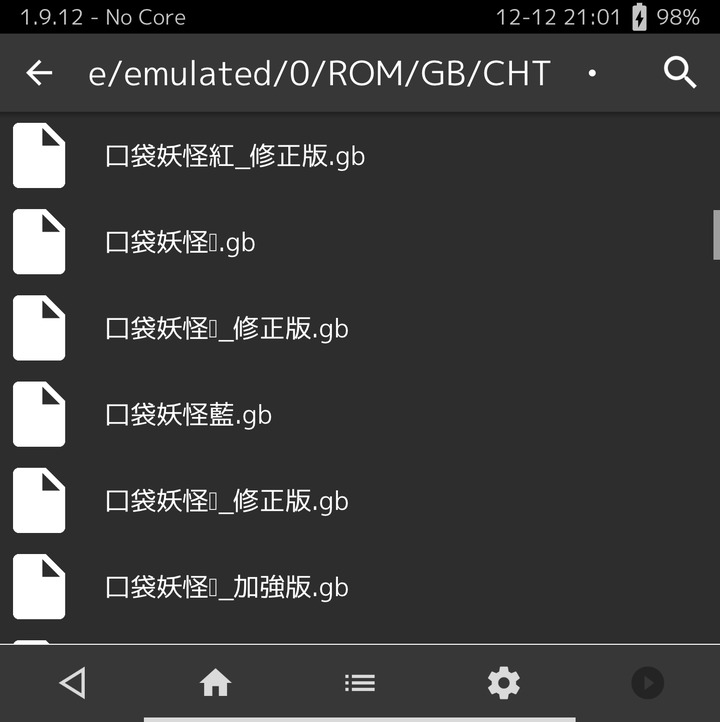
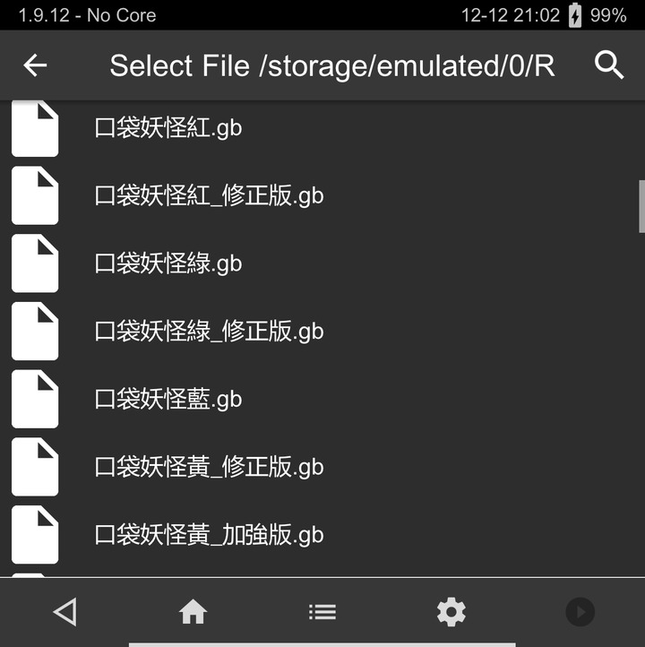
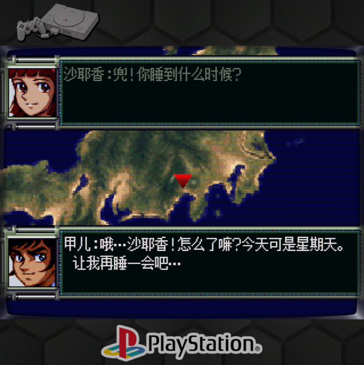
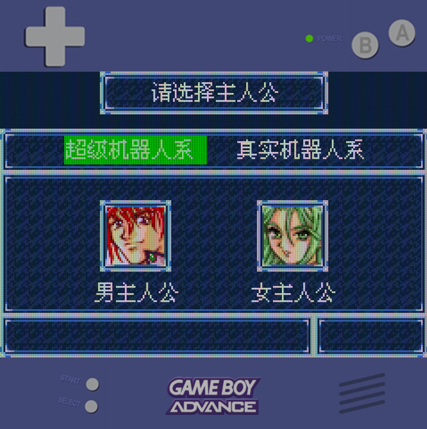
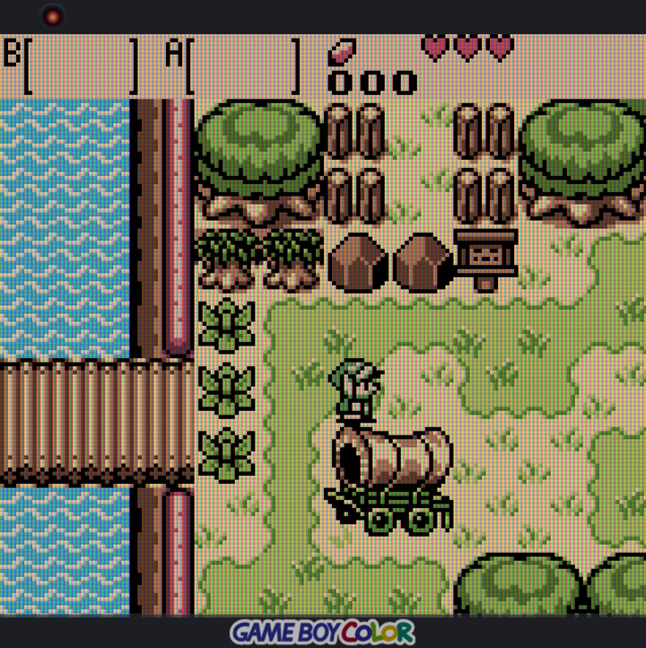
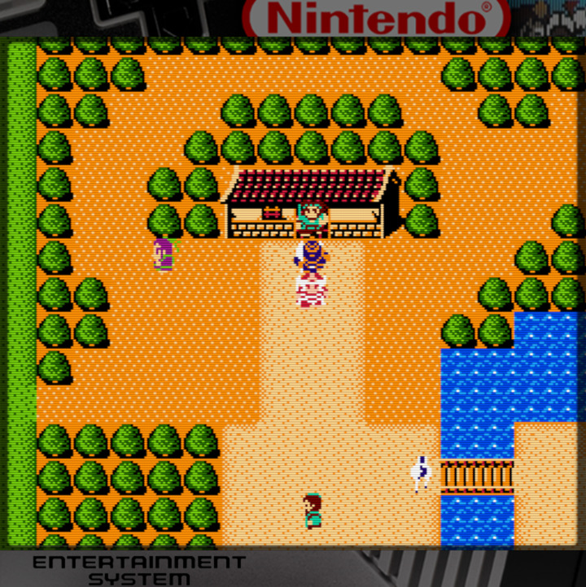
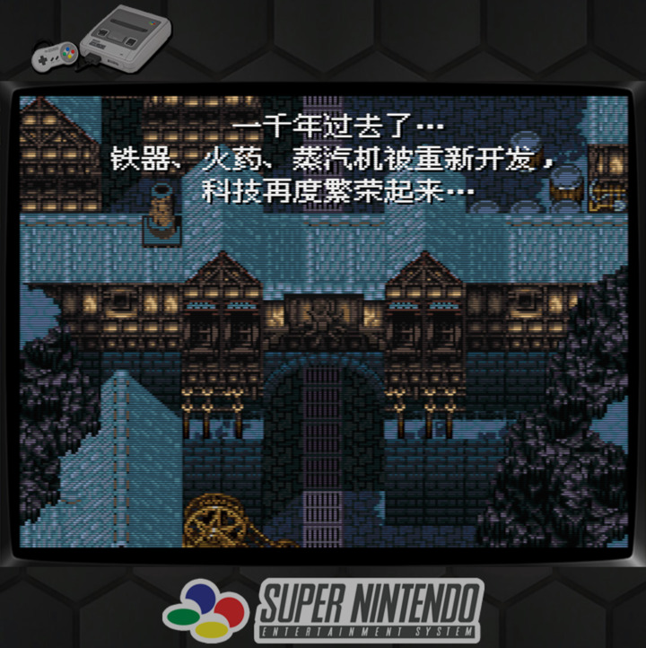
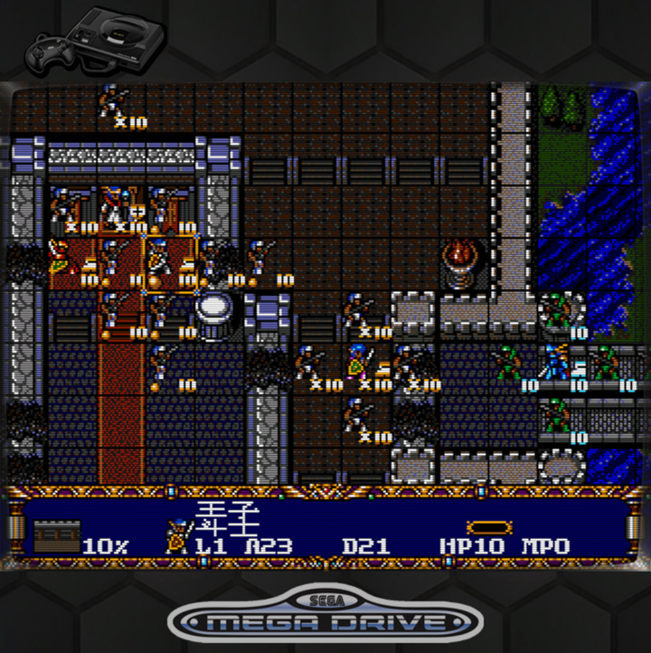
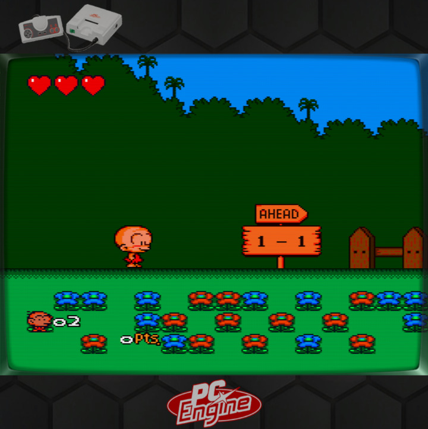

Steward
分享是一種喜悅、更是一種幸福
手機 - Unihertz Titan 2 (None-EEA) - RetroArch設置
參考資訊：
https://github.com/retrogamecorps/RGB30stockoverlays
https://github.com/steward-fu/website/releases/download/titan2/font.ttf
字型修正前

字型修正後
/data/data/com.retroarch/assets/glui/font.ttf

PS1
1. Settings => Video => Scaling => Integer Scale => OFF 2. Settings => Video => Scaling => Aspect Ratio => Custom 3. Settings => Video => Scaling => Custom Aspect Ratio (X Position) => 0 4. Settings => Video => Scaling => Custom Aspect Ratio (Y Position) => 270 5. Settings => Video => Scaling => Custom Aspect Ratio (Width) => 1440 6. Settings => Video => Scaling => Custom Aspect Ratio (Height) => 1080 7. On-Screen Overlay => Overlay Present => psx/default.cfg 8. Shaders => Load => shaders_glsh => crt => crt-easymode.glsl 9. Shader => Save => Save Core Present 10. Overrides => Save Core Overrides

GBA
1. Settings => Video => Scaling => Integer Scale => OFF 2. Settings => Video => Scaling => Aspect Ratio => Custom 3. Settings => Video => Scaling => Custom Aspect Ratio (X Position) => 0 4. Settings => Video => Scaling => Custom Aspect Ratio (Y Position) => 360 5. Settings => Video => Scaling => Custom Aspect Ratio (Width) => 1440 6. Settings => Video => Scaling => Custom Aspect Ratio (Height) => 960 7. On-Screen Overlay => Overlay Present => gba/default.cfg 8. Shaders => Load => shaders_glsh => handheld => lcd3x.glsl 9. Shader => Save => Save Core Present 10. Overrides => Save Core Overrides

GB/GBC
1. Settings => Video => Scaling => Integer Scale => OFF 2. Settings => Video => Scaling => Aspect Ratio => Custom 3. Settings => Video => Scaling => Custom Aspect Ratio (X Position) => 0 4. Settings => Video => Scaling => Custom Aspect Ratio (Y Position) => 110 5. Settings => Video => Scaling => Custom Aspect Ratio (Width) => 1440 6. Settings => Video => Scaling => Custom Aspect Ratio (Height) => 1296 7. On-Screen Overlay => Overlay Present => gbc/default.cfg 8. Shaders => Load => shaders_glsh => handheld => lcd3x.glsl 9. Shader => Save => Save Core Present 10. Overrides => Save Core Overrides

FC
1. Settings => Video => Scaling => Integer Scale => OFF 2. Settings => Video => Scaling => Aspect Ratio => Custom 3. Settings => Video => Scaling => Custom Aspect Ratio (X Position) => 0 4. Settings => Video => Scaling => Custom Aspect Ratio (Y Position) => 135 5. Settings => Video => Scaling => Custom Aspect Ratio (Width) => 1440 6. Settings => Video => Scaling => Custom Aspect Ratio (Height) => 1260 7. On-Screen Overlay => Overlay Present => nes/default.cfg 8. Shaders => Load => shaders_glsh => crt => crt-easymode.glsl 9. Shader => Save => Save Core Present 10. Overrides => Save Core Overrides

SNES
1. Settings => Video => Scaling => Integer Scale => OFF 2. Settings => Video => Scaling => Aspect Ratio => Custom 3. Settings => Video => Scaling => Custom Aspect Ratio (X Position) => 0 4. Settings => Video => Scaling => Custom Aspect Ratio (Y Position) => 270 5. Settings => Video => Scaling => Custom Aspect Ratio (Width) => 1440 6. Settings => Video => Scaling => Custom Aspect Ratio (Height) => 1080 7. On-Screen Overlay => Overlay Present => snes/default.cfg 8. Shaders => Load => shaders_glsh => crt => crt-easymode.glsl 9. Shader => Save => Save Core Present 10. Overrides => Save Core Overrides

MD
1. Settings => Video => Scaling => Integer Scale => OFF 2. Settings => Video => Scaling => Aspect Ratio => Custom 3. Settings => Video => Scaling => Custom Aspect Ratio (X Position) => 0 4. Settings => Video => Scaling => Custom Aspect Ratio (Y Position) => 270 5. Settings => Video => Scaling => Custom Aspect Ratio (Width) => 1440 6. Settings => Video => Scaling => Custom Aspect Ratio (Height) => 1080 7. On-Screen Overlay => Overlay Present => megadrive/default.cfg 8. Shaders => Load => shaders_glsh => crt => crt-easymode.glsl 9. Shader => Save => Save Core Present 10. Overrides => Save Core Overrides

PCEngine
1. Settings => Video => Scaling => Integer Scale => OFF 2. Settings => Video => Scaling => Aspect Ratio => Custom 3. Settings => Video => Scaling => Custom Aspect Ratio (X Position) => 0 4. Settings => Video => Scaling => Custom Aspect Ratio (Y Position) => 270 5. Settings => Video => Scaling => Custom Aspect Ratio (Width) => 1440 6. Settings => Video => Scaling => Custom Aspect Ratio (Height) => 1080 7. On-Screen Overlay => Overlay Present => pcengine/default.cfg 8. Shaders => Load => shaders_glsh => crt => crt-easymode.glsl 9. Shader => Save => Save Core Present 10. Overrides => Save Core Overrides
